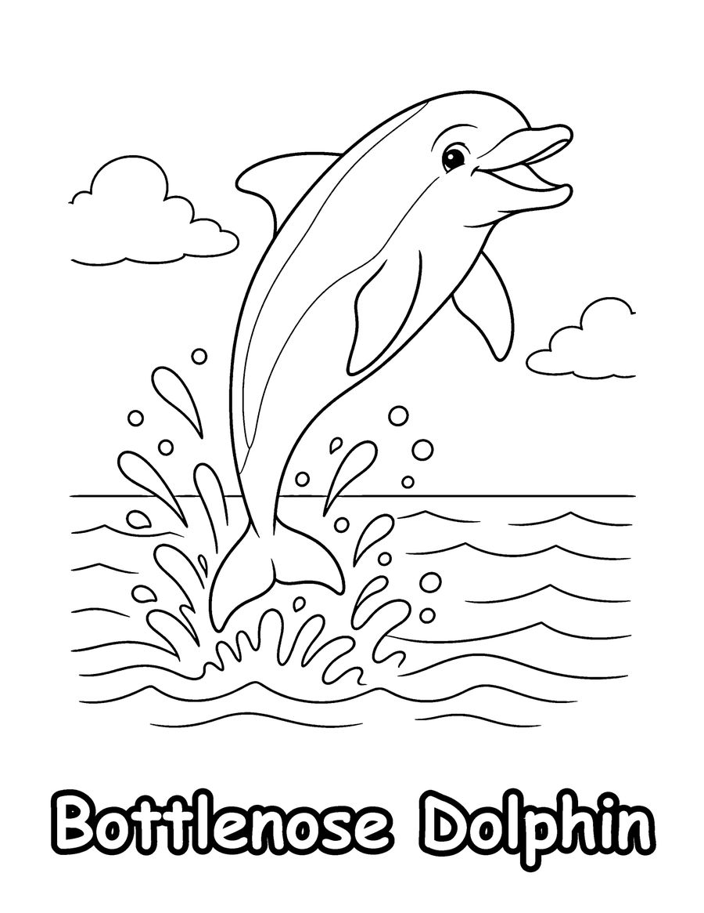
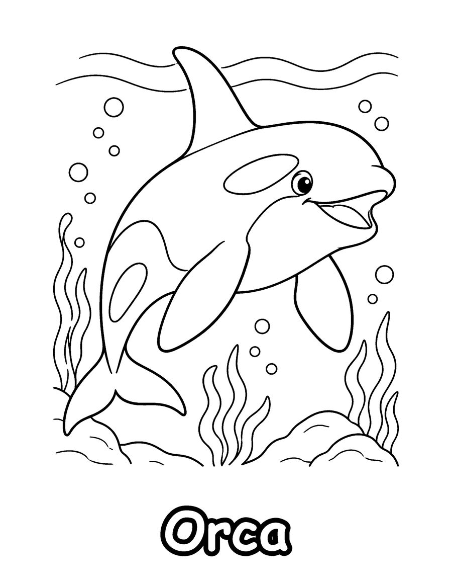
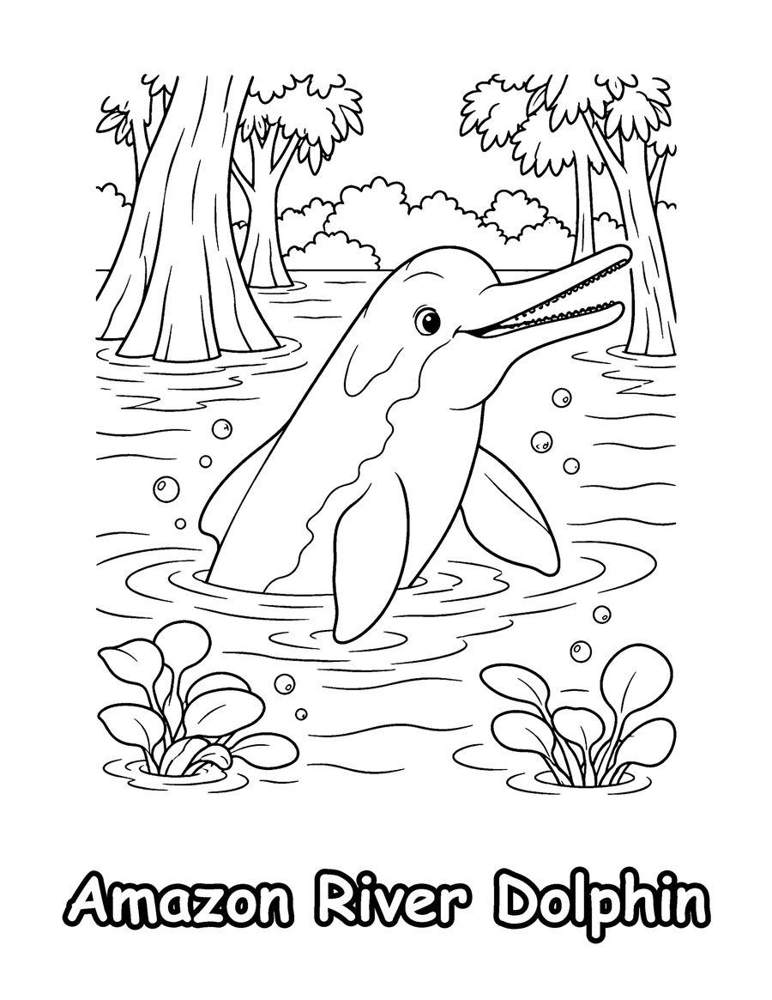

These free dolphin coloring pages for kids come from Dolphins of the World, a coloring book that shows 40 different dolphins with their real species names. Your free set has a bottlenose dolphin, an orca and an Amazon river dolphin, each drawn with the correct body shape, beak and fins so children can learn to tell species apart as they color.
Did you know the orca is the largest member of the dolphin family, even though it is often called a killer whale? Amazon river dolphins live in rivers instead of the sea, and some of them turn pink as they grow older. Ask your child where each dolphin lives, then find the place on a map. These pages are a nice fit for ocean units, marine biology clubs and quiet classroom time for ages 6 to 12. Print on US Letter paper at 100% scale and color with markers or colored pencils. The full book has 40 species, from common dolphins to rare river dolphins.
Your 3 free coloring pages


Amazon River Dolphin
Download free page (PDF)Printing tips
- Print at 100% scale on US Letter (8.5 x 11 in) paper. For A4, choose “Fit to page”.
- Use heavier paper (65 lb / 120 gsm or more) if you color with markers, so ink does not bleed through.
- Download the PDF first, then print from your PDF viewer for the sharpest lines.
Get all 40 pages
These 3 pages are a taste of Dolphins of the World (Kids 6-12). The full coloring book has 40 pages, ready to print or color in a book.
More free coloring pages

Free Whale and Sea Otter Coloring Pages
All ages

Free Coral Reef Coloring Pages for Adults
Teens & adults

Free Prehistoric Sea Monster Coloring Pages
Kids 6-12

Free Arctic Animals Coloring Pages
Teens & adults